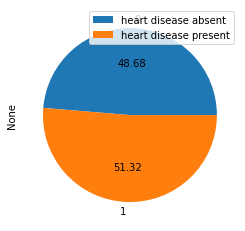
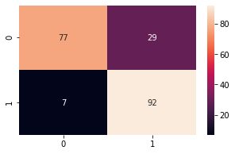
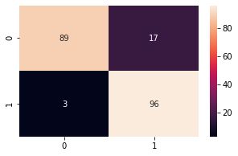
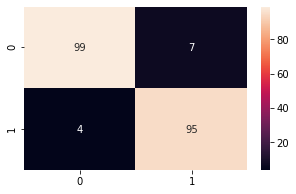

import pandas as pd
import numpy as np
import matplotlib.pyplot as plt
import seaborn as sns
from sklearn.model_selection import train_test_split
from sklearn.preprocessing import StandardScaler
from sklearn.linear_model import LogisticRegression
from sklearn.tree import DecisionTreeClassifier
from sklearn.svm import SVC
from sklearn.metrics import mean_squared_error, accuracy_score, confusion_matrix, classification_reportImporting Various dependencies
Data loading and Processing
#load heart disease data to panda dataframe
heart_disease = pd.read_csv("/Users/maryam/Desktop/heart 2.csv", na_values = '?')#print first 5 columnns
heart_disease.head()| age | sex | cp | trestbps | chol | fbs | restecg | thalach | exang | oldpeak | slope | ca | thal | target | |
|---|---|---|---|---|---|---|---|---|---|---|---|---|---|---|
| 0 | 52 | 1 | 0 | 125 | 212 | 0 | 1 | 168 | 0 | 1.0 | 2 | 2 | 3 | 0 |
| 1 | 53 | 1 | 0 | 140 | 203 | 1 | 0 | 155 | 1 | 3.1 | 0 | 0 | 3 | 0 |
| 2 | 70 | 1 | 0 | 145 | 174 | 0 | 1 | 125 | 1 | 2.6 | 0 | 0 | 3 | 0 |
| 3 | 61 | 1 | 0 | 148 | 203 | 0 | 1 | 161 | 0 | 0.0 | 2 | 1 | 3 | 0 |
| 4 | 62 | 0 | 0 | 138 | 294 | 1 | 1 | 106 | 0 | 1.9 | 1 | 3 | 2 | 0 |
#print 5 last columns
heart_disease.tail()| age | sex | cp | trestbps | chol | fbs | restecg | thalach | exang | oldpeak | slope | ca | thal | target | |
|---|---|---|---|---|---|---|---|---|---|---|---|---|---|---|
| 1020 | 59 | 1 | 1 | 140 | 221 | 0 | 1 | 164 | 1 | 0.0 | 2 | 0 | 2 | 1 |
| 1021 | 60 | 1 | 0 | 125 | 258 | 0 | 0 | 141 | 1 | 2.8 | 1 | 1 | 3 | 0 |
| 1022 | 47 | 1 | 0 | 110 | 275 | 0 | 0 | 118 | 1 | 1.0 | 1 | 1 | 2 | 0 |
| 1023 | 50 | 0 | 0 | 110 | 254 | 0 | 0 | 159 | 0 | 0.0 | 2 | 0 | 2 | 1 |
| 1024 | 54 | 1 | 0 | 120 | 188 | 0 | 1 | 113 | 0 | 1.4 | 1 | 1 | 3 | 0 |
#data information
heart_disease.info()<class 'pandas.core.frame.DataFrame'>
RangeIndex: 1025 entries, 0 to 1024
Data columns (total 14 columns):
# Column Non-Null Count Dtype
--- ------ -------------- -----
0 age 1025 non-null int64
1 sex 1025 non-null int64
2 cp 1025 non-null int64
3 trestbps 1025 non-null int64
4 chol 1025 non-null int64
5 fbs 1025 non-null int64
6 restecg 1025 non-null int64
7 thalach 1025 non-null int64
8 exang 1025 non-null int64
9 oldpeak 1025 non-null float64
10 slope 1025 non-null int64
11 ca 1025 non-null int64
12 thal 1025 non-null int64
13 target 1025 non-null int64
dtypes: float64(1), int64(13)
memory usage: 112.2 KB#check sum of missing values in each columns
heart_disease.isnull().sum()
#there is no null value in the datasetage 0
sex 0
cp 0
trestbps 0
chol 0
fbs 0
restecg 0
thalach 0
exang 0
oldpeak 0
slope 0
ca 0
thal 0
target 0
dtype: int64#statiscal description of each columns
heart_disease.describe()| age | sex | cp | trestbps | chol | fbs | restecg | thalach | exang | oldpeak | slope | ca | thal | target | |
|---|---|---|---|---|---|---|---|---|---|---|---|---|---|---|
| count | 1025.000000 | 1025.000000 | 1025.000000 | 1025.000000 | 1025.00000 | 1025.000000 | 1025.000000 | 1025.000000 | 1025.000000 | 1025.000000 | 1025.000000 | 1025.000000 | 1025.000000 | 1025.000000 |
| mean | 54.434146 | 0.695610 | 0.942439 | 131.611707 | 246.00000 | 0.149268 | 0.529756 | 149.114146 | 0.336585 | 1.071512 | 1.385366 | 0.754146 | 2.323902 | 0.513171 |
| std | 9.072290 | 0.460373 | 1.029641 | 17.516718 | 51.59251 | 0.356527 | 0.527878 | 23.005724 | 0.472772 | 1.175053 | 0.617755 | 1.030798 | 0.620660 | 0.500070 |
| min | 29.000000 | 0.000000 | 0.000000 | 94.000000 | 126.00000 | 0.000000 | 0.000000 | 71.000000 | 0.000000 | 0.000000 | 0.000000 | 0.000000 | 0.000000 | 0.000000 |
| 25% | 48.000000 | 0.000000 | 0.000000 | 120.000000 | 211.00000 | 0.000000 | 0.000000 | 132.000000 | 0.000000 | 0.000000 | 1.000000 | 0.000000 | 2.000000 | 0.000000 |
| 50% | 56.000000 | 1.000000 | 1.000000 | 130.000000 | 240.00000 | 0.000000 | 1.000000 | 152.000000 | 0.000000 | 0.800000 | 1.000000 | 0.000000 | 2.000000 | 1.000000 |
| 75% | 61.000000 | 1.000000 | 2.000000 | 140.000000 | 275.00000 | 0.000000 | 1.000000 | 166.000000 | 1.000000 | 1.800000 | 2.000000 | 1.000000 | 3.000000 | 1.000000 |
| max | 77.000000 | 1.000000 | 3.000000 | 200.000000 | 564.00000 | 1.000000 | 2.000000 | 202.000000 | 1.000000 | 6.200000 | 2.000000 | 4.000000 | 3.000000 | 1.000000 |
#checks the amount of times a value occurs
heart_disease["target"].value_counts()1 526
0 499
Name: target, dtype: int64heart_disease.groupby("target").size().plot(kind ="pie", autopct = "%.2f")
labels = ["heart disease absent", "heart disease present"]
plt.legend(labels)<matplotlib.legend.Legend at 0x7fe83ad0bf70>
Dummies using panda ro convert categorical value to one-hot encoding
#converts categorical value to one-hot encoding
heart_disease = pd.get_dummies(heart_disease,columns = ["cp"])#outputs dataset with new columns
heart_disease.head()| age | sex | trestbps | chol | fbs | restecg | thalach | exang | oldpeak | slope | ca | thal | target | cp_0 | cp_1 | cp_2 | cp_3 | |
|---|---|---|---|---|---|---|---|---|---|---|---|---|---|---|---|---|---|
| 0 | 52 | 1 | 125 | 212 | 0 | 1 | 168 | 0 | 1.0 | 2 | 2 | 3 | 0 | 1 | 0 | 0 | 0 |
| 1 | 53 | 1 | 140 | 203 | 1 | 0 | 155 | 1 | 3.1 | 0 | 0 | 3 | 0 | 1 | 0 | 0 | 0 |
| 2 | 70 | 1 | 145 | 174 | 0 | 1 | 125 | 1 | 2.6 | 0 | 0 | 3 | 0 | 1 | 0 | 0 | 0 |
| 3 | 61 | 1 | 148 | 203 | 0 | 1 | 161 | 0 | 0.0 | 2 | 1 | 3 | 0 | 1 | 0 | 0 | 0 |
| 4 | 62 | 0 | 138 | 294 | 1 | 1 | 106 | 0 | 1.9 | 1 | 3 | 2 | 0 | 1 | 0 | 0 | 0 |
#outputs all columns
heart_disease.columnsIndex(['age', 'sex', 'trestbps', 'chol', 'fbs', 'restecg', 'thalach', 'exang',
'oldpeak', 'slope', 'ca', 'thal', 'target', 'cp_0', 'cp_1', 'cp_2',
'cp_3'],
dtype='object')#separate the features into numerical and categorical data
numerical_cols = ["age", "trestbps", "chol","thalach","oldpeak"]
categorical_cols = list(set(heart_disease.columns) - set(numerical_cols)- {"target"})categorical_cols['exang',
'cp_0',
'cp_1',
'slope',
'cp_3',
'restecg',
'cp_2',
'ca',
'thal',
'fbs',
'sex']numerical_cols['age', 'trestbps', 'chol', 'thalach', 'oldpeak']Splitting dataset
heart_disease_train, heart_disease_test = train_test_split(heart_disease,test_size = 0.2, random_state = 3)len(heart_disease_train), len(heart_disease_test)(820, 205)scaler = StandardScaler()
def get_features_and_target_arrays(heart_disease,numerical_cols,categorical_cols,scaler):
x_numeric_scaled = scaler.fit_transform(heart_disease[numerical_cols])
x_categorical = heart_disease[categorical_cols].to_numpy()
x = np.hstack((x_categorical, x_numeric_scaled))
y = heart_disease["target"]
return(x,y)x_train, y_train = get_features_and_target_arrays(heart_disease_train, numerical_cols, categorical_cols, scaler)x_test, y_test = get_features_and_target_arrays(heart_disease_test, numerical_cols, categorical_cols, scaler)Training the Model 1. logistic regression,
#LogisticRegression
hlf = LogisticRegression()
hlf.fit(x_train,y_train)
test_pred = hlf.predict(x_test)#DecisionTreeClassifier
dc_clf = DecisionTreeClassifier()
dc_clf.fit(x_train,y_train)
dlf_pred = dc_clf.predict(x_test)| age | sex | trestbps | chol | fbs | restecg | thalach | exang | oldpeak | slope | ca | thal | target | cp_0 | cp_1 | cp_2 | cp_3 | |
|---|---|---|---|---|---|---|---|---|---|---|---|---|---|---|---|---|---|
| 1020 | 59 | 1 | 140 | 221 | 0 | 1 | 164 | 1 | 0.0 | 2 | 0 | 2 | 1 | 0 | 1 | 0 | 0 |
| 1021 | 60 | 1 | 125 | 258 | 0 | 0 | 141 | 1 | 2.8 | 1 | 1 | 3 | 0 | 1 | 0 | 0 | 0 |
| 1022 | 47 | 1 | 110 | 275 | 0 | 0 | 118 | 1 | 1.0 | 1 | 1 | 2 | 0 | 1 | 0 | 0 | 0 |
| 1023 | 50 | 0 | 110 | 254 | 0 | 0 | 159 | 0 | 0.0 | 2 | 0 | 2 | 1 | 1 | 0 | 0 | 0 |
| 1024 | 54 | 1 | 120 | 188 | 0 | 1 | 113 | 0 | 1.4 | 1 | 1 | 3 | 0 | 1 | 0 | 0 | 0 |
#SupportVectorMachine
svc_clf = SVC()
svc_clf.fit(x_train,y_train)
svc_pred = svc_clf.predict(x_test)Models Evaliuation and accuracy
#logisticRegression
print("The accuracy score on logistic regression model is: ", accuracy_score(y_test,test_pred))
print ("The classification report on LR model is: \n",classification_report(y_test,test_pred))
cm = confusion_matrix(y_test,test_pred)
plt.figure(figsize=(5,3))
sns.heatmap(cm, annot = True)
print ("The confusion matrix on LR model is: \n",confusion_matrix(y_test,test_pred))The accuracy score on logistic regression model is: 0.824390243902439
The classification report on LR model is:
precision recall f1-score support
0 0.92 0.73 0.81 106
1 0.76 0.93 0.84 99
accuracy 0.82 205
macro avg 0.84 0.83 0.82 205
weighted avg 0.84 0.82 0.82 205
The confusion matrix on LR model is:
[[77 29]
[ 7 92]]
#SupportVectorMachine
print("The accuracy score on SupportVectorMachine is: ", accuracy_score(y_test,svc_pred))
print("The classification report on LR model is: \n", classification_report(y_test,svc_pred))
cm = confusion_matrix(y_test,svc_pred)
plt.figure(figsize=(5,3))
sns.heatmap(cm, annot = True)
print("The confusion matrix on LR model is: \n", confusion_matrix(y_test,svc_pred))The accuracy score on SupportVectorMachine is: 0.9024390243902439
The classification report on LR model is:
precision recall f1-score support
0 0.97 0.84 0.90 106
1 0.85 0.97 0.91 99
accuracy 0.90 205
macro avg 0.91 0.90 0.90 205
weighted avg 0.91 0.90 0.90 205
The confusion matrix on LR model is:
[[89 17]
[ 3 96]]
#### DecisionTreeClassifier(DTC)
print("The accuracy score on DecisionTreeClassifier is: ", accuracy_score(y_test,dlf_pred))
print ("The cclassification report on DTC model is: \n",classification_report(y_test,dlf_pred))
cm = confusion_matrix(y_test,dlf_pred)
plt.figure(figsize=(5,3))
sns.heatmap(cm, annot = True)
print ("The confusion matrix on DTC model is: \n",)The accuracy score on DecisionTreeClassifier is: 0.9463414634146341
The confusion matrix on DTC model is:
The cclassification report on DTC model is:
precision recall f1-score support
0 0.96 0.93 0.95 106
1 0.93 0.96 0.95 99
accuracy 0.95 205
macro avg 0.95 0.95 0.95 205
weighted avg 0.95 0.95 0.95 205

Building the heart disease predictive model
input_data = (59,1,140,221,0,1,164,1,0.0,2,0,2,1,0,1,0
)
# target is 0
#convert input data to a numpy array
numpy_data = np.asarray(input_data)
#reshape the numpy array to allow for prediction
numpy_data_reshape = numpy_data.reshape(1,-1)
#using RandomForestClassifier
prediction = dc_clf.predict(numpy_data_reshape)
print(prediction)
if (prediction[0] == 1):
print("The Person is predicted to have heart disease")
else:
print("The person is predicted to not have heart disease")[0]
The person is predicted to not have heart disease